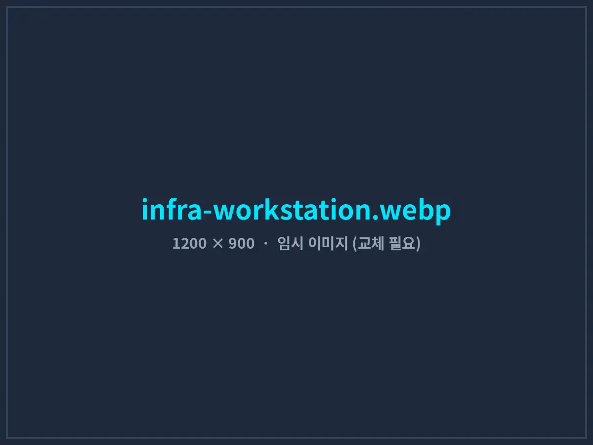
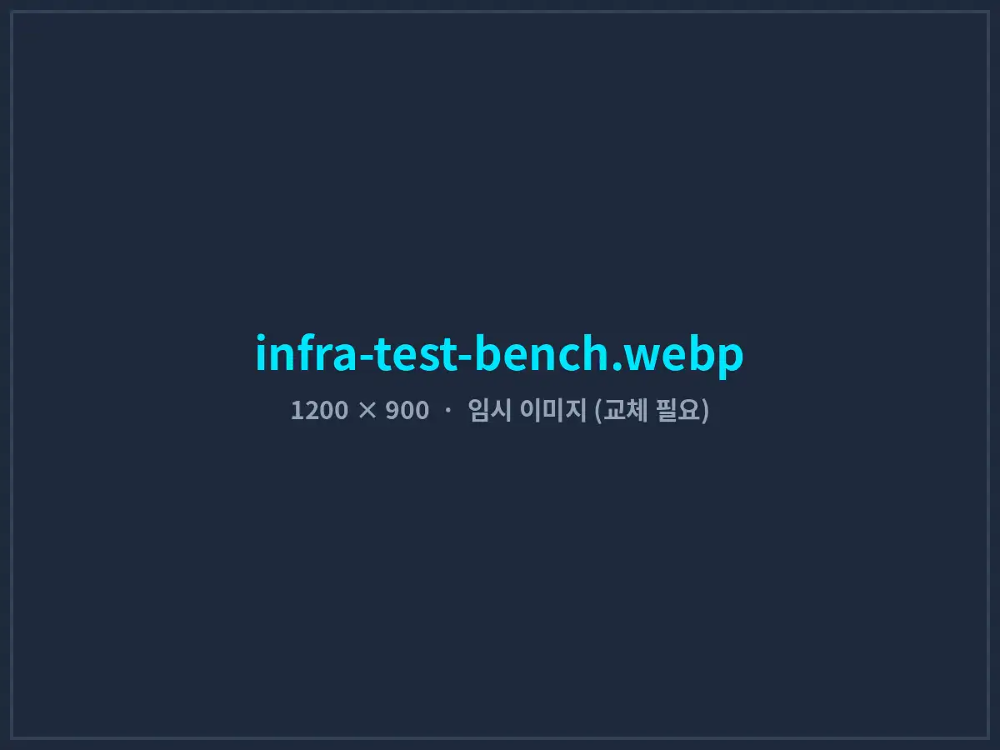

현장에 가기 전에, 같은 환경에서 먼저 검증합니다
장비 연동과 AI 시스템은 책상 위 코드만으로 완성되지 않습니다. 고객 현장과 같은 장비·데이터로 먼저 검증하는 개발 인프라와, 납품 후에도 안정적으로 운영되도록 하는 배포·보안·지원 체계를 갖추고 있습니다.
인프라 한눈에 보기
(AI · 장비 · 금융 · 비전)
01개발 · 검증 환경
AI 워크스테이션
NVIDIA RTX 4090(24GB) 기반 워크스테이션에서 비전 검사 모델 학습, 음성 합성(TTS)·음성 인식(Whisper) 모델 최적화, 추론 속도 벤치마크를 수행합니다.
장비 연동 테스트 벤치
RS-232/485 변환기, Modbus 시뮬레이터, PLC 교육용 키트, 프로그래머블 전원공급기, 산업용 GigE 카메라를 갖춘 벤치에서 드라이버와 통신 예외 상황을 검증합니다.
금융 모의 운용 환경
증권사 모의투자 서버와 과거 시세 데이터베이스로 자동매매 로직을 백테스트하고, 실제 장 시간과 동일하게 모의 운용합니다.
다중 OS · 해상도 테스트
Windows 10/11, 다양한 화면 배율(100~175%)과 현장용 저사양 PC 환경에서 프로그램 표시와 성능을 확인합니다.


02배포 · 업데이트 체계
자체 제품 오토튜브 Pro를 판매·운영하며 구축한 배포 체계를 고객 납품 프로젝트에도 동일하게 적용합니다.
- 설치 파일(MSI) 배포: 관리자 권한 없이도 설치되는 사용자 영역 설치 방식을 지원해 현장 PC 보안 정책과 충돌하지 않습니다.
- 자동 업데이트: Cloudflare R2 저장소를 통해 새 버전을 배포하고, 프로그램 실행 시 자동으로 확인·설치합니다. 문제가 생기면 이전 버전으로 되돌릴 수 있습니다.
- 대용량 리소스 분리 배포: AI 모델처럼 큰 파일은 첫 실행 시 별도로 내려받아 설치 파일 크기를 줄였습니다.
- 라이선스 관리: Google Apps Script 기반 라이선스 서버로 PC별 인증과 기간 관리를 처리합니다.
03데이터 보안 원칙
온프레미스 우선
생산 데이터, 검사 이미지, 매매 기록은 기본적으로 고객사 내부 PC·서버에 저장합니다. 외부 클라우드 사용은 고객 동의가 있을 때만 적용합니다.
인증 정보 암호화
API 키, 증권사 토큰, DB 접속 정보는 Windows 암호화 저장소(DPAPI)에 보관하고 로그와 화면에 노출하지 않습니다.
권한 분리
작업자·엔지니어·관리자 권한을 나눠 설정 변경은 허가된 사람만 할 수 있게 하고, 모든 변경 이력을 기록합니다.
비밀유지 · 소스 관리
요청 시 착수 전 비밀유지계약(NDA)을 체결합니다. 소스 코드는 비공개 저장소에서 버전 관리하며, 계약에 따라 납품 시 소스 코드를 함께 제공합니다.
04유지보수 · 지원 체계
| 구분 | 무상 안정화 (납품 후 3개월) | 연간 유지보수 계약 (선택) |
|---|---|---|
| 장애 대응 | 하자 수정 무상 | 무상, 원격 우선 · 필요 시 방문 |
| 1차 응답 | 영업일 1일 이내 | 영업일 4시간 이내 |
| 정기 점검 | — | 분기 1회 원격 점검 · 리포트 |
| 기능 개선 | 경미한 화면·설정 변경 | 연간 협의 범위 내 개선 포함 |
| AI 모델 재학습 | — | 분기 1회 (비전 검사 프로젝트) |
※ 유지보수 비용은 시스템 규모에 따라 개발비의 연 10~15% 수준에서 협의합니다.
05기술 스택
| 영역 | 사용 기술 |
|---|---|
| 데스크톱 애플리케이션 | C#, .NET 8 / .NET Framework 4.8, WinForms, WPF, WebView2 |
| 웹 · 대시보드 | HTML/CSS/JavaScript, Tabulator, Lightweight Charts, Node.js |
| AI · 머신러닝 | Python, PyTorch, YOLO, ONNX Runtime, TensorRT, Whisper, Qwen3-TTS, Gemini API |
| 장비 통신 | RS-232/485, Modbus RTU/TCP, MC Protocol, SCPI/VISA, TCP/UDP 소켓 |
| 금융 API | 키움증권 REST·WebSocket, 한국투자증권 Open API, Yahoo Finance, Finnhub |
| 데이터베이스 | MS SQL Server, PostgreSQL, SQLite |
| 배포 · 운영 | MSI 설치 패키지, Cloudflare R2, GitHub, Google Apps Script, Make.com |
우리 현장 환경에서도 가능할까요?
사용 중인 장비·PC·네트워크 환경을 알려주시면 적합한 구성을 제안드립니다.